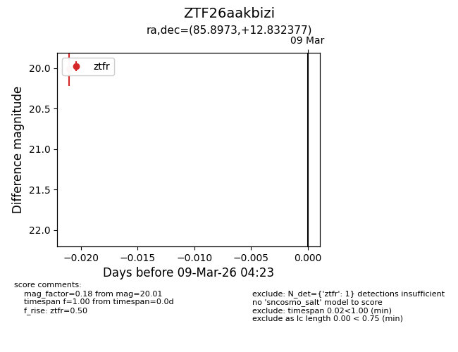
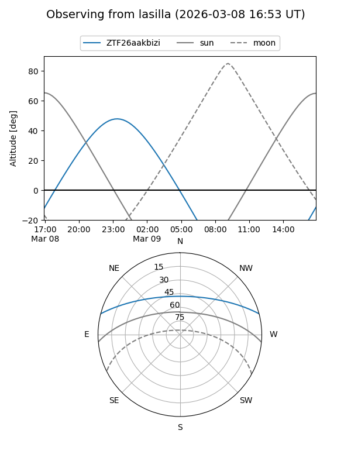
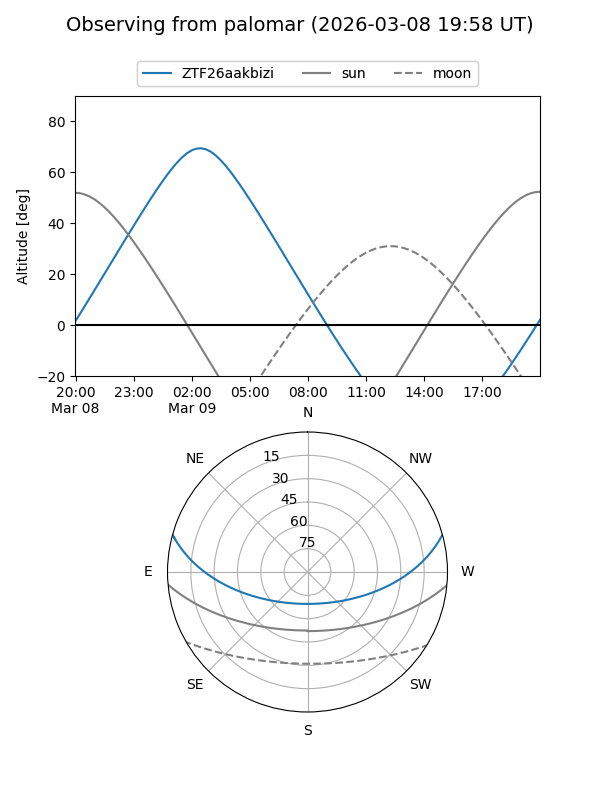

ZTF26aakbizi
Target ZTF26aakbizi at 2026-03-09 04:24
Aliases and brokers:
FINK: link
Lasair: link
ALeRCE: link
alt names
ZTF26aakbizi (ztf,fink_ztf)
Coordinates:
equatorial (ra, dec) = 85.8973,+12.83238
equatorial (HMS+DMS) = 05:43:35.36,+12:49:56.56
galactic (l, b) = (193.5894,-8.73627)
Flags:
Photometry:
last ztfr=20.01
1 ztfr detections
Lightcurve

Visibility


Additional plots